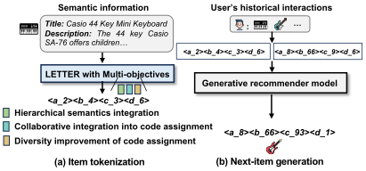
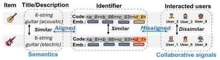
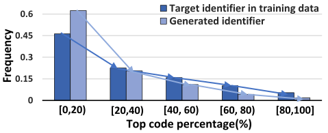
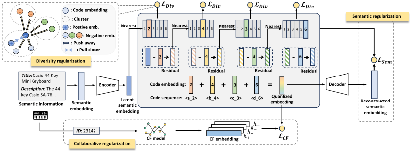
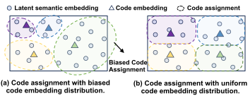
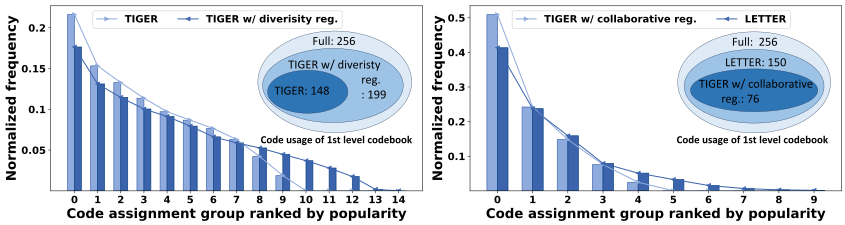
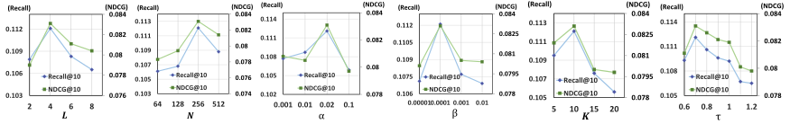

面向生成式推荐的可学习物品词元化
摘要
利用强大的大语言模型（LLM）进行生成式推荐已引起了广泛关注。然而，一个关键挑战在于如何通过有效的物品词元化，将推荐数据转换到 LLM 的语言空间之中。现有方法（如 ID、文本以及基于码本的标识符）在编码语义信息、融入协同信号或处理码分配偏差方面均存在不足。为解决这些局限，我们提出了 LETTER（一种面向生成式推荐的可学习词元器，LEarnable Tokenizer for generaTivE Recommendation），它融合了层次化语义、协同信号与码分配多样性，以满足标识符的基本要求。LETTER 集成了用于语义正则化的残差量化 VAE、用于协同正则化的对比对齐损失，以及用于缓解码分配偏差的多样性损失。我们在两个模型上实例化了 LETTER，并从理论上提出了排序引导的生成损失，以增强其排序能力。在三个数据集上的实验验证了 LETTER 的优越性，将该领域基于 LLM 的生成式推荐推进至新的最先进水平。
1. 引言
利用大语言模型（LLM）进行生成式推荐已成为一条重要途径，并引起了大量研究兴趣 (Hua et al., 2023; Rajput et al., 2023)。借助 LLM 的强大能力（例如，丰富的世界知识、推理能力和泛化能力），大量工作正在探索将 LLM 用于生成式推荐，展示了构建基础 LLM 以从自然语言处理拓展到信息检索与推荐领域的潜力 (Geng et al., 2022; Cui et al., 2022)。如图 1 所示，给定用户历史上交互过的物品，生成式推荐旨在利用 LLM 生成目标物品作为推荐。通过 LLM 编码和生成物品的一个关键问题是 物品词元化，它通过标识符（即，一个词元序列）为每个物品建立索引，从而弥合推荐数据与 LLM 语言空间之间的差距。因此，研究面向基于 LLM 的生成式推荐的物品词元化至关重要。

现有的物品词元化方法主要探索了三种标识符类型来为物品建立索引：
- •
-
•
文本标识符直接利用物品的语义信息，如标题、属性或/和描述作为物品标识符 (Bao et al., 2023a; Hua et al., 2023)。然而，这类文本标识符存在以下问题： 1）语义信息在标识符的词元序列中并未按从粗到细的粒度层次化分布。如果目标物品的首个词元与用户偏好没有紧密对齐（例如，电影标题中的 “With” 和 “Be”），则会导致较低的生成概率； 2）文本标识符缺乏来自用户行为的协同信号 (Bao et al., 2023a)。标识符的词元序列完全由语义信息决定。因此，语义相似但协同信号不同的物品会呈现相似的词元序列，从协同过滤（CF）的角度削弱了物品的区分度（参见第 2 节和图 2）。
- •
鉴于上述考量，理想的标识符应满足以下标准：
-
•
将层次化语义融入标识符，其中词元序列最初编码宽泛且粗粒度的语义，逐步过渡到更精细、细粒度的细节。这符合生成式推荐的自回归生成特性。
-
•
在词元分配中融入协同信号，确保在用户行为中具有相似协同信号的物品拥有相似的词元序列作为标识符。
-
•
提高词元分配的多样性以缓解物品生成偏差，从而确保物品生成的公平性。
为此，我们提出了一种面向生成式推荐的可学习词元器，命名为 LETTER。LETTER 引入了三种正则化来增强基于码本的标识符。具体而言，语义正则化首先集成残差量化 VAE（RQ-VAE）(Lee et al., 2022)，将物品语义信息转化为层次化标识符 (Rajput et al., 2023)。在此基础上，协同正则化利用对比对齐损失，将 RQ-VAE 中的语义量化嵌入与来自训练良好的 CF 模型（例如，LightGCN (He et al., 2020)）的 CF 嵌入对齐。此外，LETTER 引入了多样性损失以增强码嵌入多样性，从而缓解码分配偏差和物品生成偏差。我们在两个具有代表性的生成式推荐模型上实例化了 LETTER，并从理论上提出了排序引导的生成损失以提升这些生成模型的排序能力。在三个数据集上的大量实验与深入研究表明，LETTER 通过同时考虑标识符中的层次化语义、协同信号和码分配多样性，能够实现更优越的物品词元化。为保证可复现性，我们在 https://github.com/HonghuiBao2000/LETTER 上发布了代码和数据。
综上，本工作的贡献如下。
-
•
我们全面分析了理想标识符的必要特征。据此，我们提出了一种名为 LETTER 的新型可学习词元器，旨在自适应地学习涵盖层次化语义、协同信号和码分配多样性的标识符。
-
•
我们在两个生成式推荐模型上实例化了 LETTER，并利用排序引导的生成损失从理论上增强生成式推荐模型的排序能力。
-
•
我们在三个数据集上进行了大量实验，并结合多种设置下的深入探究，验证了 LETTER 优于现有的面向生成式推荐的物品词元化方法。
2. 物品词元化
生成式推荐旨在给定用户历史交互的情况下生成下一个物品 (Li et al., 2024a)。基于 LLM 的生成式推荐的一个关键基础步骤在于物品词元化，即为每个物品分配一个标识符。每个标识符是一个词元序列，以辅助 LLM 进行物品编码和生成。通过物品词元化，基于 LLM 的生成式推荐模型可以 1）将用户的历史交互转换为标识符序列以进行物品编码，并且 2）自回归地生成物品标识符以进行下一物品推荐（参见图 1(b)）。



现有的物品词元方法探索了 ID 标识符 (Hua et al., 2023; Geng et al., 2022; Wang et al., 2024; Chu et al., 2023)、文本标识符 (Bao et al., 2023a; Zhang et al., 2021, 2023a) 和基于码本的标识符 (Rajput et al., 2023; Zheng et al., 2024)。然而，ID 标识符在语义编码方面的能力不足 (Tan et al., 2024)。此外，我们更详细地介绍了文本标识符和基于码本的标识符中的关键问题。
-
•
非层次化语义。如第 1 节所述，语义信息在文本标识符中并未按从粗到细的粒度层次化分布。
- •
- •
鉴于此，我们认为追求理想标识符需要考虑三个基本目标： 1）词元序列的层次化语义融合， 2）词元序列中的协同信号融合，以及 3）码分配的高多样性。
3. 方法
3.1. LETTER
为实现物品词元化的三个目标，我们构建了 LETTER 用于基于 LLM 的生成式推荐。具体而言，如图 4 所示，LETTER 能够生成具有层次化语义的标识符，即，码序列。此外，我们引入协同正则化以赋予码序列协同信号，并引入多样性正则化以在词元器训练期间缓解码分配偏差问题。
语义正则化。为追求具有层次化语义的标识符，我们基于 RQ-VAE (Lee et al., 2022) 开发了 LETTER，它将层次化物品语义编码为码序列。作为一个多级嵌入量化器，RQ-VAE 使用固定数量的码本递归量化语义残差，从而自然地实现具有从粗到细语义的标识符。如图 4 所示，可学习词元器通过两个步骤生成层次化语义标识符：1）语义嵌入提取，以及 2）语义嵌入量化。
语义嵌入提取。给定物品及其标题、描述等内容信息，我们首先提取语义嵌入 ，采用预训练的语义提取器，例如，LLaMA-7B (Touvron et al., 2023)。随后，语义嵌入被压缩为潜在语义嵌入 ，通过编码器 实现。
语义嵌入量化。潜在语义嵌入 随后通过 级码本被量化为码序列，其中 是标识符长度。具体而言，对于每个码层级 ，我们有一个码本 ，其中 是可学习的码嵌入， 表示码本大小。随后，残差量化可以表述为
| (1) |
其中 是来自第 级码本的分配码索引， 是来自上一级的语义残差，并且我们设置 。直观地说，在每个码层级，LETTER 找到与语义残差最相似的码嵌入，并为物品分配相应的码索引。经过递归量化后，我们最终获得量化标识符 ，以及量化嵌入 。量化嵌入 随后被解码为重建的语义嵌入 。语义正则化的损失表述为：
| (2) |
其中 为停止梯度操作 (Van Den Oord et al., 2017)， 为平衡码嵌入优化与编码器优化强度的系数。 具体而言，重构损失 旨在在潜空间中保持关键语义信息，使得语义嵌入能够由量化嵌入重构得到。 此外， 减小所有层级的残差误差，并联合训练编码器与码嵌入 (Van Den Oord et al., 2017)。 通过语义正则化，码序列编码了层次化语义，促进了从粗粒度到细粒度的生成以及冷启动泛化。
协同正则化。 为了将协同信号注入码序列而不仅仅是码嵌入，我们引入协同正则化，通过对比学习将量化嵌入 与 CF 嵌入对齐。 具体而言，我们利用一个训练良好的 CF 推荐模型（例如，SASRec (Kang and McAuley, 2018) 和 LightGCN (He et al., 2020)）获得物品的 CF 嵌入，然后通过 CF 损失将其与量化嵌入 对齐：
| (3) |
其中 指 CF 嵌入， 表示内积， 为批大小。
直观而言，协同正则化鼓励具有相似协同交互的物品表现出相似的码序列。 与 TIGER (Rajput et al., 2023) 等仅依赖语义生成标识符的典型基于码本的词元化方法不同，我们通过优化量化嵌入将协同信号注入码嵌入，从而改变码分配，使其更好地与协同模式对齐（实证证据见第 4.3.2 节）。

多样性正则化。 为解决码生成偏置问题，学习更均匀的码嵌入分布是有前景的方向。 如图 5(a) 所示，偏置的码嵌入分布更易在潜空间中导致偏置的码分配，即部分码被分配给更多物品。 相比之下，均匀的码嵌入分布有助于更均衡的码分配（图 5(b)）。 鉴于此，我们旨在提升码嵌入的多样性以实现多样化的码分配。
具体而言，对于每个码本，我们将码嵌入聚类为 组，采用约束 K-means (Bradley et al., 2000)。 然后，我们通过多样性损失对聚类后的码嵌入进行正则化，该损失定义为
| (4) |
其中 为物品 的最近码嵌入， 表示从码 的同一簇中随机选取样本的码嵌入， 表示该码本中除 之外的所有码嵌入。 直观而言，如图 4 所示，我们将同一簇的码嵌入拉近，并将不同簇的码嵌入彼此推远，从而鼓励码嵌入的多样性并缓解码分配偏置问题（参见 第 4.3.2 节的实证证据）。
总体损失。 LETTER 的训练损失总结为：
| (5) |
其中 和 分别为控制协同正则化和多样性正则化强度的超参数。
3.2. 实例化
为将 LETTER 实例化到基于 LLM 的生成式推荐模型，我们首先通过式 (5) 在推荐物品上训练词元化器。 然后，训练良好的 LETTER 可以被实例化，用于为 LLM 的训练和推理阶段对物品进行词元化。
3.2.1. 训练
生成式推荐模型的训练包括物品词元化和模型优化阶段。 物品词元化通过训练良好的 LETTER 将每个物品索引为标识符 。 然后，我们基于物品标识符转换用户交互序列。形式上，我们有 ，其中 表示用户按时间顺序历史交互的物品， 指用户下一个交互物品的标识符。
排序引导的生成损失。 现有工作通常通过用于最小化负对数似然的生成损失在 上优化 LLM。 尽管生成损失在各个领域都有效，但此类生成损失可能忽略对所有物品的排序优化，从而削弱推荐性能。 鉴于此，我们提出一种排序引导的生成损失，它改变传统泛化损失中的温度，以强调对困难负样本的惩罚，从而增强生成式推荐模型的排序能力。形式上，该损失定义为：
| (6) |
其中 为用于惩罚困难负样本的可调温度， 指第 个词元，它属于 ， 表示 之前的词元序列， 表示生成模型的可学习参数， 为词元词表11 1 该词元词表通过加入 LETTER 的码进行扩展。。
命题 0。
对于给定的排序引导生成损失 和参数 ，以下陈述成立：
-
•
最小化 等价于为用户优化困难负样本物品，其中更小的 会增强对困难负样本的惩罚。
-
•
的最小化与单向部分 AUC (Shi et al., 2023) 的优化相关，后者与 Recall 和 NDCG 等排序指标强相关，最终带来 top- 排序能力的提升。
该命题的证明见附录 7。
3.2.2. 推理
4. 实验
在本节中，我们在三个真实世界数据集上进行大量实验，以回答以下研究问题：
-
•
RQ1：我们提出的 LETTER 与不同类型的标识符相比表现如何？
-
•
RQ2：LETTER 的各个组件（例如，协同正则化和多样性正则化）如何影响性能？
-
•
RQ3：LETTER 在不同设置下（即，标识符长度、码本大小、协同正则化与多样性正则化的强度以及温度）表现如何？
4.1. 实验设置
4.1.1. 数据集
我们使用来自不同领域的三个真实世界推荐数据集： 1) Instruments 来自 Amazon 评论数据集 (Ni et al., 2019)，包含用户与丰富音乐设备的交互。 2) Beauty 包含来自 Amazon 评论数据集 (Ni et al., 2019) 的用户与大量美容产品的交互。 3) Yelp22 2 https://www.yelp.com/dataset. 是一个流行数据集，包含 Yelp 平台上的商业交互。 我们采用先前工作 (Kang and McAuley, 2018; Rajput et al., 2023) 的预处理技术，丢弃交互数少于 5 的稀疏用户和物品。 我们考虑序列推荐设置33 3 我们关注序列推荐设置，因为其在实际应用中具有很高的实用性和显著潜力。 并使用 留一法策略 (Rajput et al., 2023; Zheng et al., 2024) 划分数据集。 对于训练，我们遵循 (Hua et al., 2023; Zheng et al., 2024)，将用户历史中的物品数限制为 20。
4.1.2. 基线
我们将 LETTER 与两组工作中的竞争性基线进行比较，即传统推荐模型和基于 LLM 的生成式推荐模型，并使用不同类型的标识符（即，ID、文本和基于码本的标识符）：1) MF (Rendle et al., 2012) 在潜空间中将用户-物品交互分解为用户嵌入和物品嵌入。 2) Caser (Tang and Wang, 2018) 采用卷积神经网络捕获用户的空间和位置信息。 3) HGN (Ma et al., 2019) 利用图神经网络学习用户和物品表示以预测用户-物品交互。 4) BERT4Rec (Sun et al., 2019) 利用 BERT 的预训练语言表示捕获语义用户-物品关系。 5) LightGCN (He et al., 2020) 是一种轻量图卷积网络模型，关注用户与物品之间的高阶连接。 6) SASRec (Kang and McAuley, 2018) 采用自注意力机制捕获用户交互历史中的长期依赖。 7) BIGRec (Bao et al., 2023a) 是一种使用文本标识符的基于 LLM 的生成式推荐模型，每个物品由其标题表示。 8) P5-TID (Hua et al., 2023) 使用物品标题作为文本标识符，用于基于 LLM 的生成式推荐模型。 9) P5-SemID (Hua et al., 2023) 利用物品元数据（例如，属性）为基于 LLM 的生成式推荐模型构建 ID 标识符。 10) P5-CID (Hua et al., 2023) 通过由物品共现图导出的谱聚类树，将协同信号融入基于 LLM 的生成式推荐模型的标识符中。 11) TIGER (Rajput et al., 2023) 通过 RQ-VAE 引入基于码本的标识符，将语义信息量化为码序列，用于基于 LLM 的生成式推荐。 12) LC-Rec (Zheng et al., 2024) 使用基于码本的标识符和辅助对齐任务，通过将生成的码序列与自然语言连接，更好地利用 LLM 中的知识。
评估设置。 我们使用两个指标：top- Recall（R@）和 NDCG（N@），其中 = 5 和 10，遵循 (Rajput et al., 2023)。
4.1.3. 实现细节
我们在两个代表性的基于 LLM 的生成式推荐模型上实例化 LETTER，即，TIGER (Rajput et al., 2023) 和 LC-Rec (Zheng et al., 2024)。 对于 TIGER，由于官方实现尚未发布，我们遵循论文进行实现。 对于 LC-Rec，我们采用参数高效微调技术 LoRA (Hu et al., 2021) 对 LLaMA-7B (Touvron et al., 2023) 进行微调。 为获得物品语义嵌入，我们遵循 (Zheng et al., 2024)，采用 LLaMA-7B 编码物品内容信息。 我们获取 32 维物品嵌入用于协同正则化，这些嵌入来自 SASRec (Kang and McAuley, 2018)，并将多样性正则化的簇数 设为 10。 所有实验均在 4 块 NVIDIA RTX A5000 GPU 上进行。
对于物品词元化，我们对 RQ-VAE 使用 4 级码本，其中每个码本包含 256 个维度为 32 的码嵌入。 我们训练 LETTER 20k 个轮次，采用 AdamW (Loshchilov and Hutter, 2019) 优化器，学习率为 1e-3、批大小为 。我们遵循 (Rajput et al., 2023) 将 设为 0.25，并搜索 ，其范围为 {1e-1, 2e-2, 1e-2,1e-3}；搜索 ，其范围为 {1e-2, 1e-3, 1e-4,1e-5}。 在 LETTER 训练之后，我们基于验证性能对 TIGER 和 LC-Rec 进行微调直至收敛，学习率分别在 {1e-3, 5e-4} 和 {1e-4, 2e-4, 3e-4} 中选取。
| Instruments | Beauty | Yelp | ||||||||||
|---|---|---|---|---|---|---|---|---|---|---|---|---|
| Model | R@5 | R@10 | N@5 | N@10 | R@5 | R@10 | N@5 | N@10 | R@5 | R@10 | N@5 | N@10 |
| MF | 0.0479 | 0.0735 | 0.0330 | 0.0412 | 0.0294 | 0.0474 | 0.0145 | 0.0191 | 0.0220 | 0.0381 | 0.0138 | 0.0190 |
| Caser | 0.0543 | 0.0710 | 0.0355 | 0.0409 | 0.0205 | 0.0347 | 0.0131 | 0.0176 | 0.0150 | 0.0263 | 0.0099 | 0.0134 |
| HGN | 0.0813 | 0.1048 | 0.0668 | 0.0774 | 0.0325 | 0.0512 | 0.0206 | 0.0266 | 0.0186 | 0.0326 | 0.0115 | 0.0159 |
| Bert4Rec | 0.0671 | 0.0822 | 0.0560 | 0.0608 | 0.0203 | 0.0347 | 0.0124 | 0.0170 | 0.0186 | 0.0291 | 0.0115 | 0.0159 |
| LightGCN | 0.0794 | 0.0100 | 0.0662 | 0.0728 | 0.0305 | 0.0511 | 0.0194 | 0.0260 | 0.0248 | 0.0407 | 0.0156 | 0.0207 |
| SASRec | 0.0751 | 0.0947 | 0.0627 | 0.0690 | 0.0380 | 0.0588 | 0.0246 | 0.0313 | 0.0183 | 0.0296 | 0.0116 | 0.0152 |
| BigRec | 0.0513 | 0.0576 | 0.0470 | 0.0491 | 0.0243 | 0.0299 | 0.0181 | 0.0198 | 0.0154 | 0.0169 | 0.0137 | 0.0142 |
| P5-TID | 0.0000 | 0.0001 | 0.0000 | 0.0000 | 0.0182 | 0.0432 | 0.0132 | 0.0254 | 0.0184 | 0.0263 | 0.0130 | 0.0155 |
| P5-SemID | 0.0775 | 0.0964 | 0.0669 | 0.0730 | 0.0393 | 0.0584 | 0.0273 | 0.0335 | 0.0202 | 0.0324 | 0.0131 | 0.0170 |
| P5-CID | 0.0809 | 0.0987 | 0.0695 | 0.0751 | 0.0404 | 0.0597 | 0.0284 | 0.0347 | 0.0219 | 0.0347 | 0.0140 | 0.0181 |
| TIGER | 0.0870 | 0.1058 | 0.0737 | 0.0797 | 0.0395 | 0.0610 | 0.0262 | 0.0331 | 0.0253 | 0.0407 | 0.0164 | 0.0213 |
| LETTER-TIGER | 0.0909 | 0.1122 | 0.0763 | 0.0831 | 0.0431 | 0.0672 | 0.0286 | 0.0364 | 0.0277 | 0.0426 | 0.0184 | 0.0231 |
| LC-Rec | 0.0824 | 0.1006 | 0.0712 | 0.0772 | 0.0443 | 0.0642 | 0.0311 | 0.0374 | 0.0230 | 0.0359 | 0.0158 | 0.0199 |
| LETTER-LC-Rec | 0.0913 | 0.1115 | 0.0789 | 0.0854 | 0.0505 | 0.0703 | 0.0355 | 0.0418 | 0.0255 | 0.0393 | 0.0168 | 0.0211 |
4.2. 整体性能（RQ1）
我们在两个基于 SOTA LLM 的生成式推荐模型上评估 LETTER。LETTER 在 TIGER（LETTER-TIGER）和 LC-REC（LETTER-LC-Rec）上实例化的性能报告于表 1，由此我们得到以下观察：
- •
-
•
在具有不同种类标识符的所有基于 LLM 的基线中，使用基于码本的标识符的模型（TIGER 和 LC-Rec）在大多数情况下优于使用 ID 标识符的模型（P5-SemID 和 P5-CID）以及使用文本标识符的模型（BIGRec 和 P5-TID）。这归因于通过 RQ-VAE 引入了不同粒度的层次语义，其通过把握细粒度细节更有效地区分相似物品。同时，使用文本标识符的 BIGRec 和 P5-TID 性能较差，可能是由于物品的相似语义与不相似交互之间存在潜在错位，从而损害了协同信号的学习，影响准确推荐。
- •
4.3. 深入分析
4.3.1. 消融实验（RQ2）
为了深入研究每种正则化的效果，我们在 TIGER 上比较了 LETTER 的以下五种变体：(0) 我们仅对物品词元化使用语义正则化，这等价于 TIGER。(1) 我们对物品词元化同时结合语义和协同正则化，记为“TIGER w/ c. r.”。(2) 我们对物品词元化同时涉及语义和多样性正则化，称为“TIGER w/ d. r.”。(3) 我们对物品词元化使用语义、协同和多样性正则化，并用原始生成损失训练 TIGER，记为“(1) w/ d. r.”。(4) 我们对物品词元化采用所有正则化，并应用排序引导的生成损失，即 LETTER-TIGER。
| Instruments | Beauty | |||
|---|---|---|---|---|
| Variants | R@10 | N@10 | R@10 | N@10 |
| (0): TIGER | 0.1058 | 0.0797 | 0.0610 | 0.0331 |
| (1): TIGER w/ c. r. | 0.1078 | 0.0810 | 0.0660 | 0.0351 |
| (2): TIGER w/ d. r. | 0.1075 | 0.0809 | 0.0618 | 0.0335 |
| (3): (1) w/ d. r. | 0.1092 | 0.0819 | 0.0672 | 0.0357 |
| (4): LETTER-TIGER | 0.1122 | 0.0831 | 0.0672 | 0.0364 |
Instruments 和 Beauty 上的结果描绘于表 2。为节省篇幅我们省略了 Yelp 上具有类似观察的结果。从表中我们得到几个关键观察：1) 结合协同正则化或多样性正则化都能提升 TIGER 的性能，这分别验证了将协同信号注入代码分配以及提升代码嵌入多样性的有效性。2) 用全部三种正则化优化物品词元化将进一步提升性能（(3) 优于 (0-2)），表明在代码分配中同时考虑语义和协同信息并提升多样性是有效的。3) LETTER-TIGER 取得了最佳性能，其利用了排序引导的生成损失。这表明通过改变温度以增强排序能力来抑制困难负样本是有效的。
4.3.2. 代码分配分布（RQ2）

我们进一步研究多样性正则化能否有效缓解物品词元化中的代码分配偏差。我们分别比较了由 1) 带（w/）和不带多样性正则化的 TIGER（图 6 左图）以及 2) 带协同正则化的 TIGER 在带和不带多样性正则化的情况下（图 6 右图）所词元化的标识符第一个代码的分布。具体而言，对于每种词元化方法，我们首先用训练良好的分词器对物品进行词元化。然后我们按照频率对标识符的第一个代码排序，并将第一个代码分成若干组，每组包含 15 个代码。
从图 6 中我们观察到：1) 引入多样性正则化有效促进了第一个代码更均匀的分布，从而缓解了代码分配偏差，并可能减轻生成式推荐模型的物品生成偏差。2) 引入多样性正则化显著提高了第一级码本中代码的利用率，从而提升了代码分配的多样性。3) 尽管加入协同正则化降低了 TIGER 的代码利用率（从 148 降至 76），但结合多样性正则化反而补偿了这一代码利用率的下降。因此，LETTER 能够捕获协同信号并保持高代码利用率，同时满足理想标识符的多项标准。
4.3.3. 代码嵌入分布（RQ2）

为了分析多样性正则化能否缓解代码嵌入的偏置分布，我们可视化了 LETTER 和去掉（w/o）多样性正则化的 LETTER 的代码嵌入。我们首先从第一级码本获得代码嵌入，然后执行 PCA 将高维嵌入降到 3 维空间以进行可视化。如图 7 所示，我们在球形图中呈现 3 维代码嵌入，其中每个点代表一个代码嵌入向量，颜色越深表示该代码被分配给了越多的物品。通过比较 (a) 去掉多样性正则化的 LETTER 和 (b) LETTER，我们可以发现，与去掉多样性正则化的 LETTER 相比，LETTER 的第一个代码嵌入在嵌入表示空间中分布更均匀。这验证了多样性正则化在表示空间中实现更多样化代码嵌入分布的有效性，从根本上缓解了图 5(a) 中的代码分配偏差问题。
4.3.4. 标识符中协同信号的探究（RQ2）。
| Dataset | Model | R@5 | R@10 | N@5 | N@10 |
|---|---|---|---|---|---|
| Instruments | TIGER | 0.0050 | 0.0150 | 0.0024 | 0.0049 |
| LETTER | 0.0080 | 0.0159 | 0.0038 | 0.0058 | |
| Beauty | TIGER | 0.0128 | 0.0213 | 0.0064 | 0.0085 |
| LETTER | 0.0175 | 0.0343 | 0.0076 | 0.0118 |
| Instruments | Beauty | |
|---|---|---|
| TIGER | 0.0849 | 0.1135 |
| LETTER | 0.2760 | 0.3312 |
为了验证 LETTER 是否如预期将协同信号编码进标识符，我们设计了两个实验进行分析：
排序实验。我们旨在通过利用物品的量化嵌入进行交互预测来评估 LETTER 的排序性能。具体而言，我们首先从训练良好的分词器获得物品的量化嵌入 。然后我们将训练良好的传统 CF 模型（即 SASRec）的物品嵌入替换为量化嵌入以进行交互预测。直观上，有效捕获协同信号的标识符将带来更好的排序性能。从表 3 中我们可以观察到，LETTER 以较大幅度优于 TIGER，表明协同信号被有效引入。

相似性实验。我们的目标是验证具有相似协同信号的物品是否展现出相似的标识符。我们首先基于预训练 CF 嵌入的相似度为每个物品配对与其最相似的物品。接下来，我们评估物品对中两个物品之间代码序列的相似性。具体而言，我们度量两个物品代码序列之间的重叠程度，并在表 4 中报告所有物品的平均结果。我们可以发现，对于具有相似协同信号的物品，LETTER 比 TIGER 取得了更相似的代码序列，从而缓解了语义与协同相似性之间的错位问题。
4.3.5. 超参数分析（RQ3）
我们进一步研究 LETTER 中引入的若干重要超参数，以促进未来的应用。
标识符长度 。我们将 从 2 变化到 8，并在图 8 中呈现结果。可以观察到：1) 随着我们将 从 2 增加到 4，性能有所提升。因为过短的标识符可能丢失一些细粒度信息，导致标识符的表达能力较弱。2) 将标识符长度从 4 继续增加到 8 反而会降低性能。这是合理的，因为自回归生成会遭受误差累积 (Ren et al., 2024b)。由于准确的物品生成要求序列中所有生成的代码都正确，因此准确生成长标识符比短标识符更具挑战性。
码本大小 。我们评估了不同码本大小 64、128、256 和 512 下的 LETTER。图 8 中的结果表明：1) 逐渐增大 往往表现更好。较小码本的较差表现可能是由于代码选择的多样性有限，从而无法有效区分物品。然而，2) 盲目扩大 反而可能损害性能，其中较大的码本大小可能更容易受到物品语义信息中噪声的影响，可能导致对某些无意义语义的过拟合。
协同正则化的强度 。我们将 从 0.001 变化到 0.1，并在图 8 中呈现结果。我们可以发现：1) 随着 持续增大，性能的总体趋势普遍提升。这是合理的，因为更大的 意味着注入更强的协同模式，但过大的 反而可能干扰语义正则化。2) 根据经验，我们建议设置 ，因为它可能在语义与协同正则化之间取得适当平衡，从而带来最佳性能。
多样性正则化的强度 。我们通过将 从 0.00001 调整到 0.01 来考察不同多样性正则化强度的影响。结果见图 8，我们观察到应用轻微强度的多样性正则化就足以增强代码分配的多样性（从 到 的显著提升）。相反，过量的多样性信号可能干扰分词器对语义和协同信号的整合。
聚类数 。基于 在从 5 到 20 范围内取不同值的结果，如图 8 所示，我们可以观察到，将 从 10 减小或增大，性能都趋于下降。这是可以理解的，因为过大的聚类包含太多代码嵌入，导致同一聚类内的嵌入不够接近；而过小的聚类包含的代码嵌入相对较少，导致同一聚类内的嵌入过于接近。
温度。 从 LETTER-TIGER 采用多个值时的结果来看，其取值从0.6到1.2，如图8所示， 我们可以发现， 将从1.2减小到0.7时，性能呈下降趋势。 这是合理的，因为降低温度会更加强调对难负样本的惩罚，而排序能力在此过程中得到增强，从而提升推荐性能。 然而，我们应当谨慎选择，因为过小的可能会抑制难负样本被视作其他用户正样本的可能性。
5. 相关工作
用于生成式推荐的大语言模型。 大语言模型在生成式推荐中展现出广阔前景(Li et al., 2024c; Lin et al., 2024c; Gong et al., 2023; Lin et al., 2024d)，其中物品词元化是一个关键问题。 现有的物品词元化工作主要研究三类用于物品索引的标识符：ID标识符(Hua et al., 2023; Geng et al., 2022; Wang et al., 2024; Chu et al., 2023)、文本标识符(Bao et al., 2023a; Zhang et al., 2021, 2023a; Liao et al., 2024; Dai et al., 2023; Li et al., 2023)、基于码本的标识符(Wang et al., 2024; Rajput et al., 2023; Zheng et al., 2024)。 在早期阶段，随机分配的ID难以有效编码物品的语义信息和协同模式。 因此，SemID(Hua et al., 2023)和CID(Hua et al., 2023)等ID标识符分别利用物品语义信息和协同信号来构建树状结构以生成标识符。然而，这种固定且不可学习的结构难以高效且有效地表示物品相似性并适应新物品。 另一方面，文本标识符利用物品的详细描述信息作为标识符。然而，这些方法难以分层地编码语义信息或整合协同信号。 基于码本的标识符利用码本，并试图在训练过程中整合语义信息和协同信号。然而，它们忽视了将协同信号引入固定码序列所带来的错位，以及码分配偏差。 具体而言，LC-Rec使用Sinkhorn-Knopp算法通过迭代归一化来公平地考虑层内码，却忽略了码分配的本质：码嵌入的分布。 在本工作中，我们提出一种更优的标识符，它整合了分层语义、协同信号以及码分配多样性。
用于判别式推荐的大语言模型。 大语言模型不仅用于生成式推荐，也广泛用于不同的判别式推荐任务。利用大语言模型进行判别式推荐主要采用两种方法。1）大语言模型增强的传统推荐器。许多研究利用大语言模型进行数据增强(Wei et al., 2024; Xi et al., 2023; Liu et al., 2024)和表示学习(Qiu et al., 2021; Wu et al., 2022; Ren et al., 2024a)。 2）基于大语言模型的推荐器，即直接将大语言模型用作推荐模型。 一些方法(Li et al., 2024b; Zhang et al., 2023b; Lin et al., 2024a)引入投影层来计算用户与物品之间的匹配分数以进行排序。 此外，另一类工作(Bao et al., 2023b; Lin et al., 2024b; Prakash et al., 2023)利用大语言模型进行点击率（CTR）预测，结合用户和物品特征来判断用户是否会喜欢该物品。 在本工作中，我们主要关注生成式推荐的标识符设计，因此不深入探讨和比较判别式方法。
6. 结论与未来工作
在本研究中，我们对生成式推荐中物品词元化所需的最优特征进行了全面分析。随后，我们提出了LETTER，一种可学习的词元化器，它引入了三种形式的正则化，旨在在物品标识符中捕获分层语义、协同信号和码分配多样性。我们将LETTER应用于两个主流的生成式推荐模型，并采用排序引导的生成损失来提升其排序性能。大量实验验证了LETTER在生成式推荐模型物品词元化方面的优越性。
本工作凸显了物品词元化在生成式推荐中的重要性，并为未来探索留下了一些有前景的方向。 1）利用丰富的用户行为进行词元化，使生成式推荐模型能够从多种用户动作中推断用户偏好。 2）LETTER有潜力对跨域物品进行词元化以实现开放式推荐，使生成式推荐模型能够利用多域用户行为和物品进行用户偏好推理与下一物品推荐。 3）将自然语言形式的用户指令与由LETTER词元化的用户交互历史相结合以实现个性化推荐，有望在生成式推荐模型空间中实现复杂自然语言指令与物品词元的协同推理。
7. 附录
我们的证明主要分为难负样本挖掘和与排序的关系两部分。
难负样本挖掘。 本小节主要证明两个目标：首先，排序引导损失能够挖掘难负样本。其次，随着值的减小，对难负样本的关注会增加。 我们首先证明的难负样本挖掘能力：
| (7) |
我们将证明，当第t-1个词元被确定时，我们的损失与第t个词元上的难负样本挖掘相关联。
| (8) |
| (9) |
接下来，我们分析难负样本挖掘所关联的梯度。注意到该梯度等价于最小化难负样本挖掘损失， 其中，表示停止梯度操作。 我们可以观察到： 这意味着负样本越难，越大，从而证明了我们的排序引导损失的难负样本挖掘能力。
接下来，我们阐明随着
值的减小，对难负样本的强调会增强。对于给定的负样本，
如果
，
则有
，
这表明在排序引导损失机制中调整的值会增大具有更高的更难负样本的权重，并减小较简单负样本的权重。
与排序的关系。
随后，我们揭示我们的损失与排序指标之间的相关性。
首先，让我们观察式9中的梯度，我们有：
| (10) | ||||
其中我们定义：，是推荐系统中参数的记号， 式10对成立。这意味着是的替代损失。然后我们分析：
| (11) |
这表明是每个的上界。与(Hu and Hong, 2013)类似，最小化是以下优化问题的闭式解：
| (12) |
其中是负样本的均匀分布，是KL散度。
引理0。
随后，我们将展示与top-K排序指标之间的关系，最终展示排序引导损失与排序指标之间的关系：
定理2。
仅考虑一个正样本时，OPAUC与top-K排序指标具有强相关性：
| (14) | ||||
其中是指示函数，对成立。
证明。
由于我们只有一个正样本，我们可以基于OPAUC推导出正样本的确切排序位置。我们用表示正样本的排序位置。 设，我们有： 如果，我们有： 同时，的值也可用于确定是否： 。 由于我们有： 将的结果代入和以完成证明。 ∎
参考文献
- A bi-step grounding paradigm for large language models in recommendation systems. arXiv:2308.08434. Cited by: 2nd item, §2, §4.1.2, §5.
- Tallrec: an effective and efficient tuning framework to align large language model with recommendation. In RecSys, Cited by: §5.
- Constrained k-means clustering. Microsoft Research, Redmond 20 (0), pp. 0. Cited by: §3.1.
- Leveraging large language models for pre-trained recommender systems. arXiv preprint arXiv:2308.10837. Cited by: §2, §5.
- Introduction to algorithms. MIT press. Cited by: §3.2.2.
- M6-rec: generative pretrained language models are open-ended recommender systems. In KDD, Cited by: §1.
- Uncovering chatgpt’s capabilities in recommender systems. In RecSys, pp. 1126–1132. Cited by: §5.
- Autoregressive entity retrieval. In ICLR, Vol. 2021. Cited by: §3.2.2.
- Recommendation as language processing (rlp): a unified pretrain, personalized prompt & predict paradigm (p5). In RecSys, pp. 299–315. Cited by: 1st item, §1, §2, §5.
- An unified search and recommendation foundation model for cold-start scenario. In CIKM, pp. 4595–4601. Cited by: §5.
- Lightgcn: simplifying and powering graph convolution network for recommendation. In SIGIR, pp. 639–648. Cited by: §1, §3.1, §4.1.2.
- Lora: low-rank adaptation of large language models. arXiv:2106.09685. Cited by: §4.1.3.
- Kullback-leibler divergence constrained distributionally robust optimization. Available at Optimization Online 1 (2), pp. 9. Cited by: §7.
- How to index item ids for recommendation foundation models. In SIGIR-AP, pp. 195–204. Cited by: 1st item, 2nd item, §1, §2, §3.2.2, §4.1.1, §4.1.2, §5.
- Self-attentive sequential recommendation. In ICDM, pp. 197–206. Cited by: §3.1, §4.1.1, §4.1.2, §4.1.3.
- Autoregressive image generation using residual quantization. In CVPR, pp. 11523–11532. Cited by: §1, §3.1.
- Large language models for generative recommendation: a survey and visionary discussions. LREC-Coling. Cited by: §2.
- E4SRec: an elegant effective efficient extensible solution of large language models for sequential recommendation. In WWW, Cited by: §5.
- A survey of generative search and recommendation in the era of large language models. arXiv preprint arXiv:2404.16924. Cited by: §5.
- Generative retrieval for conversational question answering. Information Processing & Management 60 (5), pp. 103475. Cited by: §5.
- Llara: aligning large language models with sequential recommenders. In SIGIR, Cited by: §5.
- ClickPrompt: ctr models are strong prompt generators for adapting language models to ctr prediction. In WWW, Cited by: §5.
- Rella: retrieval-enhanced large language models for lifelong sequential behavior comprehension in recommendation. In WWW, Cited by: §5.
- Bridging items and language: a transition paradigm for large language model-based recommendation. In KDD, Cited by: §5.
- Data-efficient fine-tuning for llm-based recommendation. In SIGIR, Cited by: §5.
- Once: boosting content-based recommendation with both open-and closed-source large language models. In WSDM, pp. 452–461. Cited by: §5.
- Decoupled weight decay regularization. Cited by: §4.1.3.
- Hierarchical gating networks for sequential recommendation. In KDD, pp. 825–833. Cited by: §4.1.2.
- Justifying recommendations using distantly-labeled reviews and fine-grained aspects. In EMNLP-IJCNLP, pp. 188–197. Cited by: §4.1.1.
- Cr-sorec: bert driven consistency regularization for social recommendation. In RecSys, pp. 883–889. Cited by: §5.
- U-bert: pre-training user representations for improved recommendation. In AAAI, pp. 4320–4327. Cited by: §5.
- Recommender systems with generative retrieval. In NeurIPS, Cited by: 3rd item, §1, §1, 2nd item, 3rd item, §2, §3.1, §4.1.1, §4.1.2, §4.1.2, §4.1.3, §4.1.3, §5.
- Representation learning with large language models for recommendation. In WWW, Cited by: §5.
- Non-autoregressive generative models for reranking recommendation. arXiv:2402.06871. Cited by: §4.3.5.
- BPR: bayesian personalized ranking from implicit feedback. UAI. Cited by: §4.1.2.
- On the theories behind hard negative sampling for recommendation. In WWW, pp. 812–822. Cited by: 2nd item, Lemma 1.
- BERT4Rec: sequential recommendation with bidirectional encoder representations from transformer. In CIKM, pp. 1441–1450. Cited by: §4.1.2.
- Towards llm-recsys alignment with textual id learning. In SIGIR, Cited by: 1st item, §2.
- Personalized top-n sequential recommendation via convolutional sequence embedding. In WSDM, pp. 565–573. Cited by: §4.1.2.
- Llama: open and efficient foundation language models. arXiv preprint arXiv:2302.13971. Cited by: §3.1, §4.1.3.
- Neural discrete representation learning. In NeurIPS, Vol. 30. Cited by: §3.1.
- Enhanced generative recommendation via content and collaboration integration. arXiv preprint arXiv:2403.18480. Cited by: §2, §5.
- Llmrec: large language models with graph augmentation for recommendation. In WSDM, pp. 806–815. Cited by: §5.
- Userbert: pre-training user model with contrastive self-supervision. In SIGIR, pp. 2087–2092. Cited by: §5.
- Towards open-world recommendation with knowledge augmentation from large language models. arXiv preprint arXiv:2306.10933. Cited by: §5.
- Recommendation as instruction following: a large language model empowered recommendation approach. arXiv preprint arXiv:2305.07001. Cited by: §2, §5.
- Collm: integrating collaborative embeddings into large language models for recommendation. arXiv preprint arXiv:2310.19488. Cited by: §5.
- Language models as recommender systems: evaluations and limitations. In NeurIPS, Cited by: §2, §5.
- Adapting large language models by integrating collaborative semantics for recommendation. In ICDE, Cited by: 3rd item, 2nd item, §2, §4.1.1, §4.1.2, §4.1.3, §5.
- When auc meets dro: optimizing partial auc for deep learning with non-convex convergence guarantee. In ICML, pp. 27548–27573. Cited by: Lemma 1.